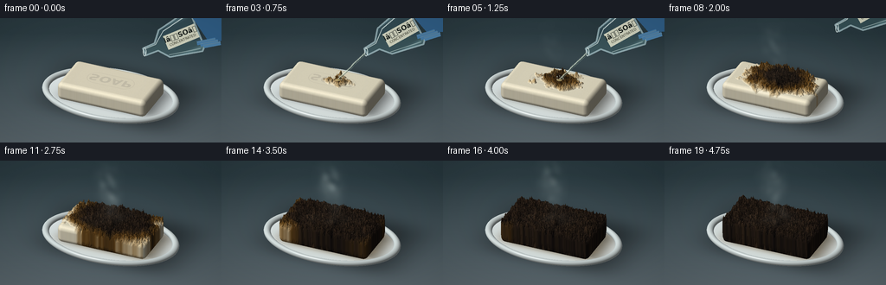
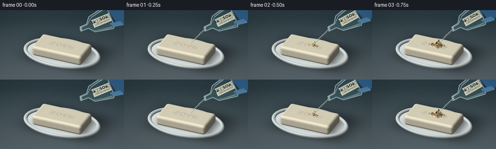
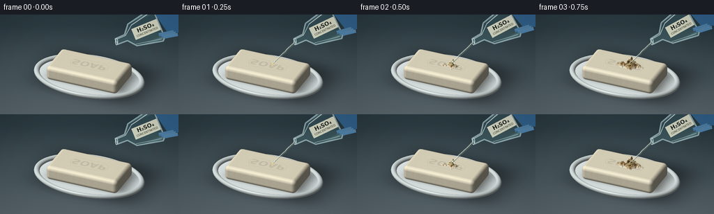

CODING AGENTS AS PIXEL WORLD MODELS
traex/GPT-6.1-Sol · material_0042
点击播放 · 原生 RGB 像素
逐轮保存的候选
回放视频、检查图与代码变化。
每份候选均可单独播放。实际图片检查记录在下方工具轨迹中。
候选 01播放与检查图
点击播放 · 原生 RGB 像素


展开代码变化
--- 上一保存版本
+++ 本次保存版本
@@ -0,0 +1,293 @@
+"""Procedural RGB timelapse: ray-marched soap, ceramic tray, glass pour and vapor.
+All geometry, texture, illumination and animation are generated locally from math.
+"""
+from pathlib import Path
+import json
+import numpy as np
+from PIL import Image, ImageDraw, ImageFont, ImageFilter
+from scipy.ndimage import gaussian_filter, map_coordinates
+from scipy.spatial import cKDTree
+import artifact_io
+
+ROOT=Path(__file__).resolve().parent
+SPEC=json.loads((ROOT/'task_spec.json').read_text())
+W,H=SPEC['width'],SPEC['height']
+S=3
+SW,SH=W*S,H*S
+rng=np.random.default_rng(4211)
+
+def unit(a):
+ a=np.asarray(a,float)
+ return a/np.linalg.norm(a)
+
+eye=np.array([3.2,-7.5,5.8]); target=np.array([0.,0.,.85])
+forward=unit(target-eye); right=unit(np.cross(forward,[0,0,1])); up=np.cross(right,forward)
+scale=8.3
+xx,yy=np.meshgrid((np.arange(SW)+.5)/SW,(np.arange(SH)+.5)/SH)
+orig=target+(xx[...,None]-.5)*scale*right+(.5-yy[...,None])*(scale*H/W)*up-forward*12
+D=forward
+light=unit([-3.5,-4.0,7])
+halfv=unit(light-D)
+
+def project(p):
+ d=np.asarray(p)-target
+ return np.array([(d@right/scale+.5)*W,(.5-d@up/(scale*H/W))*H])
+
+# Continuous object-space material fields ensure temporally stable detail.
+N=512
+noise=[]
+for sigma in [1.0,3.4,10,27]:
+ a=gaussian_filter(rng.normal(size=(N,N)),sigma,mode='wrap')
+ a=(a-a.mean())/a.std()
+ noise.append(a.astype(np.float32))
+uvx,uvy=np.meshgrid(np.linspace(-2.65,2.65,N),np.linspace(-2.65,2.65,N))
+seeds=rng.uniform(-3,3,(260,2))
+dist,_=cKDTree(seeds).query(np.stack([uvx.ravel(),uvy.ravel()],-1),k=2)
+crackmap=(dist[:,1]-dist[:,0]).reshape(N,N).astype(np.float32)
+font=ImageFont.truetype('/usr/share/fonts/truetype/dejavu/DejaVuSans-Bold.ttf',82)
+stamp=Image.new('L',(512,512)); sd=ImageDraw.Draw(stamp)
+sd.rounded_rectangle((121,200,391,310),radius=53,outline=180,width=3)
+sd.text((256,256),'SOAP',font=font,anchor='mm',fill=255)
+stamp=np.asarray(stamp,dtype=np.float32)/255
+
+def sample(a,x,y):
+ return map_coordinates(a,np.array([(y+2.65)/5.3*(N-1),(x+2.65)/5.3*(N-1)]),order=1,mode='nearest')
+
+def reaction(x,y,t):
+ # Dehydration front spreads from the point where the acid lands.
+ p=max(0,(t-.25)/3.9)
+ radial=np.sqrt(((x-.18)*.89)**2+((y-.12)*1.23)**2)
+ irregular=.105*sample(noise[2],x,y)+.04*sample(noise[1],x,y)
+ front=.14+2.65*p
+ c=np.clip((front-radial+irregular)/.38,0,1) if t>.25 else np.zeros_like(x)
+ age=np.clip((front-radial+irregular)/1.2,0,1)
+ return c,age
+
+def soap_sdf(p,t):
+ x,y,z=p.T
+ c,age=reaction(x,y,t)
+ # Low, irregular blistering, not a sugar-style towering carbon column.
+ swell=c*(.10+.18*age+.048*sample(noise[1],x,y)+.035*sample(noise[0],x,y))
+ topweight=np.clip((z-.18)/.43,0,1)
+ q=np.stack([np.abs(x)-1.60,np.abs(y)-.77,np.abs(z-.47-topweight*swell)-.16],-1)
+ return np.linalg.norm(np.maximum(q,0),axis=-1)+np.minimum(np.max(q,axis=-1),0)-.20
+
+def ring_sdf(p):
+ x,y,z=p.T
+ q=(np.sqrt((x/2.55)**2+(y/1.70)**2)-1)*2.0
+ return np.sqrt(q*q+(z-.19)**2)-.105
+
+def scene_sdf(p,t):
+ return np.minimum(soap_sdf(p,t),ring_sdf(p))
+
+def render_solid(t):
+ # Matte laboratory worktop, with a shallow-depth-of-field rear wall.
+ arr=np.empty((SH,SW,3),np.float32)
+ top=np.array([38,54,60.]); bottom=np.array([93,105,111.])
+ ramp=np.clip((yy-.12)/.95,0,1)
+ arr[:]=top[None,None,:]*(1-ramp[...,None])+bottom[None,None,:]*ramp[...,None]
+ gl=9*np.exp(-((xx-.3)/.48)**2-((yy-.34)/.43)**2)
+ arr+=gl[...,None]
+ arr+=rng.normal(0,.3,(SH,SW,1))
+ # World floor shading and soft cast shadow under the bar/tray.
+ tf=(.04-orig[...,2])/D[2]
+ floorp=orig+tf[...,None]*D
+ fx,fy=floorp[...,0],floorp[...,1]
+ shadow=np.exp(-((fx-.25)/2.65)**4-((fy-.32)/1.85)**4)*.52
+ arr*=1-shadow[...,None]
+ # A ceramic dish with an inset flat well and thick rounded lip.
+ td=(.13-orig[...,2])/D[2]
+ pd=orig+td[...,None]*D
+ rr=(pd[...,0]/2.55)**2+(pd[...,1]/1.70)**2
+ disk=rr<1
+ white=np.stack([218+3*pd[...,1],226+3*pd[...,1],226+4*pd[...,1]],-1)
+ tray_shadow=np.exp(-((pd[...,0]-.16)/1.9)**6-((pd[...,1]-.23)/1.04)**6)*.64
+ white*=1-tray_shadow[...,None]
+ # Acid/fatty residue is a thin amber puddle around the base late in the shot.
+ wet=np.clip((t-.6)/2.5,0,1)
+ puddle=np.exp(-((pd[...,0]-.12)/2.0)**6-((pd[...,1]-.09)/1.12)**6)*wet
+ fleck=sample(noise[2],pd[...,0],pd[...,1])
+ poolcol=np.stack([124+fleck*7,91+fleck*4,41+fleck*2],-1)
+ white=white*(1-puddle[...,None]*.38)+poolcol*puddle[...,None]*.38
+ white+=puddle[...,None]*np.exp(-((pd[...,1]+.71)/.035)**2)[...,None]*22
+ arr[disk]=white[disk]
+ # March only rays through the finite object volume.
+ bmin=np.array([-2.80,-1.96,0]); bmax=np.array([2.80,1.96,1.45])
+ ta=(bmin-orig)/D; tb=(bmax-orig)/D
+ near=np.max(np.minimum(ta,tb),axis=-1); far=np.min(np.maximum(ta,tb),axis=-1)
+ valid=(far>near)&(near<td+.7)
+ ids=np.flatnonzero(valid.ravel())
+ O=orig.reshape(-1,3)[ids]
+ ts=near.ravel()[ids].copy(); end=far.ravel()[ids]
+ hit=np.zeros(len(ids),bool); live=np.ones(len(ids),bool)
+ for _ in range(85):
+ ix=np.flatnonzero(live)
+ if not len(ix): break
+ p=O[ix]+ts[ix,None]*D
+ dd=scene_sdf(p,t)
+ hh=dd<.002
+ hit[ix[hh]]=True
+ ts[ix]+=np.maximum(dd*.68,.001)
+ live[ix]=~hh&(ts[ix]<end[ix])
+ ii=np.flatnonzero(hit)
+ p=O[ii]+ts[ii,None]*D
+ eps=.003
+ nor=np.stack([scene_sdf(p+np.eye(3)[k]*eps,t)-scene_sdf(p-np.eye(3)[k]*eps,t) for k in range(3)],-1)
+ nor/=np.linalg.norm(nor,axis=-1,keepdims=True)+1e-8
+ soap=soap_sdf(p,t)<ring_sdf(p)
+ x,y,z=p.T
+ c,age=reaction(x,y,t)
+ n0=sample(noise[0],x,y); n1=sample(noise[1],x,y); n2=sample(noise[2],x,y)
+ side=np.clip(nor[:,2],0,1)
+ ivory=np.stack([237+n0*.8,229+n0*.8,203+n0*.9],-1)
+ yellow=np.stack([177+n2*14,119+n2*11,38+n2*5],-1)
+ coal=np.stack([39+n1*7+n0*3,30+n1*5+n0*2,23+n1*3+n0*2],-1)
+ scorch=np.clip(age*1.6,0,1)
+ cc=yellow*(1-scorch[:,None])+coal*scorch[:,None]
+ mat=ivory*(1-c[:,None])+cc*c[:,None]
+ cracks=sample(crackmap,x,y)
+ fiss=np.exp(-(cracks/.012)**2)*c*scorch*side
+ mat*=1-fiss[:,None]*.72
+ # Inset maker's stamp disappears under the blackened surface.
+ ink=sample(stamp,x*1.5,y*1.5)*side*(1-c)
+ mat-=ink[:,None]*np.array([21,20,16])
+ foam=(np.clip((n0-1.25)*1.3,0,1)*c*(1-scorch)*side)
+ mat=mat*(1-foam[:,None]*.7)+np.array([220,189,119])*foam[:,None]*.7
+ lam=np.clip(nor@light,0,1)
+ shade=.37+.66*lam
+ reflected=.05*np.clip(-nor[:,1],0,1)
+ colors=mat*(shade+reflected)[:,None]
+ spe=np.clip(nor@halfv,0,1)
+ spec=(spe**46)*(12+65*c*(1-scorch*.4))
+ colors+=spec[:,None]*np.array([1.,.96,.83])
+ # Glazed white ceramic ring, with cool environmental reflection.
+ rc=np.array([215,225,224])[None,:]*(.40+.62*lam)[:,None]
+ rc+=(spe**90)[:,None]*63
+ fres=(1-np.clip(nor@(-D),0,1))**4
+ rc+=fres[:,None]*np.array([15,19,22])
+ colors[~soap]=rc[~soap]
+ flat=arr.reshape(-1,3)
+ flat[ids[ii]]=colors
+ return np.clip(arr,0,255)
+
+landing=project([.18,.12,.85])
+print('Impact position:',landing)
+
+def glass_and_pour(base,t):
+ im=Image.fromarray(np.uint8(base)).convert('RGBA')
+ # Flask tilts, delivers a transparent coherent stream, then withdraws.
+ retreat=np.clip((t-1.65)/.7,0,1)
+ if retreat>=1:return im
+ lip=np.array([167.,39.])+np.array([65.,-55.])*retreat
+ angle=-.39-.12*np.sin(min(t/.8,1)*np.pi/2)
+ u=np.array([np.cos(angle),np.sin(angle)]); v=np.array([-u[1],u[0]])
+ def pt(a,b):return tuple((lip+a*u+b*v)*S)
+ shape=[pt(0,-4.5),pt(15,-5),pt(25,-17),pt(62,-25),pt(66,-21),pt(66,21),pt(62,25),pt(25,17),pt(15,5),pt(0,4.5)]
+ mask=Image.new('L',(SW,SH)); md=ImageDraw.Draw(mask); md.polygon(shape,fill=255)
+ ma=np.array(mask)/255
+ # Refraction of the background, plus dim edge absorption in thick glass.
+ bg=np.asarray(im)[...,:3].astype(float)
+ Y,X=np.mgrid[:SH,:SW]
+ center=(lip+u*42)*S
+ U=(X-center[0])*u[0]+(Y-center[1])*u[1]
+ V=(X-center[0])*v[0]+(Y-center[1])*v[1]
+ xwarp=X+2.1*S*np.sin(V/(15*S)); ywarp=Y+1.4*S*np.sin(U/(20*S))
+ refr=np.stack([map_coordinates(bg[:,:,k],[ywarp,xwarp],order=1,mode='nearest') for k in range(3)],-1)
+ glass=refr*.88+np.array([15,25,28])
+ liq=(Y>center[1]+3*S)&(ma>0)
+ glass[liq]=glass[liq]*.90+np.array([8,12,10])
+ rim=np.exp(-((np.abs(V)-20*S)/(2.4*S))**2)*.5
+ glass+=rim[...,None]*np.array([54,68,68])
+ comp=bg*(1-ma[...,None])+glass*ma[...,None]
+ im=Image.fromarray(np.uint8(np.clip(comp,0,255))).convert('RGBA')
+ layer=Image.new('RGBA',im.size); dr=ImageDraw.Draw(layer)
+ dr.line(shape+[shape[0]],fill=(178,205,210,170),width=2*S,joint='curve')
+ dr.line([pt(2,-3),pt(15,-3),pt(29,-14),pt(61,-21)],fill=(235,248,244,185),width=S)
+ dr.line([pt(25,14),pt(61,21)],fill=(208,229,224,150),width=S)
+ dr.ellipse((pt(0,0)[0]-2*S,pt(0,0)[1]-5*S,pt(0,0)[0]+2*S,pt(0,0)[1]+5*S),outline=(226,240,238,210),width=S)
+ # Small printed reagent label: identifies the otherwise colorless liquid.
+ label=Image.new('RGBA',(39*S,17*S),(219,220,198,235))
+ ld=ImageDraw.Draw(label)
+ ff=ImageFont.truetype('/usr/share/fonts/truetype/dejavu/DejaVuSans-Bold.ttf',8*S)
+ ff2=ImageFont.truetype('/usr/share/fonts/truetype/dejavu/DejaVuSans.ttf',4*S)
+ ld.text((19.5*S,5.5*S),'HâSOâ',font=ff,anchor='mm',fill=(31,37,34))
+ ld.text((19.5*S,12.5*S),'CONCENTRATED',font=ff2,anchor='mm',fill=(59,60,47))
+ label=label.rotate(-np.degrees(angle),resample=Image.Resampling.BICUBIC,expand=True)
+ cp=(lip+u*46)*S
+ layer.alpha_composite(label,(int(cp[0]-label.width/2),int(cp[1]-label.height/2)))
+ # A blue nitrile-gloved grip at the edge, never covering the soap.
+ palm=[pt(66,-18),pt(78,-17),pt(95,-10),pt(101,7),pt(89,23),pt(73,16)]
+ dr.polygon(palm,fill=(48,94,134,255))
+ for k in range(3):
+ a=pt(60+k*3,14+k*3);b=pt(81+k*2,18+k*3)
+ dr.line([a,b],fill=(68+k*4,120+k*4,163+k*3,255),width=5*S)
+ dr.line([(a[0],a[1]-S),(b[0],b[1]-S)],fill=(116,161,191,180),width=S)
+ im=Image.alpha_composite(im,layer)
+ if .10<t<1.85:
+ flow=np.clip((t-.10)/.17,0,1)*np.clip((1.85-t)/.18,0,1)
+ layer=Image.new('RGBA',im.size);dr=ImageDraw.Draw(layer)
+ end=landing.copy();start=lip+np.array([-1,2])
+ end=start+(end-start)*min(1,flow*2)
+ path=[]
+ for k in range(80):
+ a=k/79
+ point=start*(1-a)+end*a
+ point[0]+=(1.3*np.sin(a*11+t*10)+.8*np.sin(a*23-t*6))*a*(1-a)
+ path.append(tuple(point*S))
+ dr.line(path,fill=(178,191,180,90),width=3*S)
+ dr.line([(x-.6*S,y) for x,y in path],fill=(234,245,220,170),width=S)
+ dr.line([(x+.8*S,y) for x,y in path],fill=(73,96,90,105),width=S)
+ if flow>.5:
+ dr.ellipse(((landing[0]-3)*S,(landing[1]-1)*S,(landing[0]+3)*S,(landing[1]+1.5)*S),fill=(228,209,146,145))
+ for j in range(5):
+ a=t*9+j*1.256
+ q=landing+np.array([np.sin(a)*(3+j*.6),-abs(np.cos(a))*5])
+ dr.ellipse((q[0]*S,q[1]*S,(q[0]+.9)*S,(q[1]+1.2)*S),fill=(224,234,217,155))
+ im=Image.alpha_composite(im,layer)
+ return im
+
+# Vapor uses advected turbulent density, never a solid opaque smoke sprite.
+smoke_seed=gaussian_filter(rng.normal(size=(SH,SW)),10)
+smoke_seed=(smoke_seed-smoke_seed.mean())/smoke_seed.std()
+def vapor(im,t):
+ amount=np.clip((t-.7)/2.0,0,1)
+ if amount==0:return im
+ Y,X=np.mgrid[:SH,:SW]
+ x=X/S;y=Y/S
+ density=np.zeros((SH,SW))
+ for j in range(15):
+ phase=(t*.46+j*.081)%1
+ height=phase*68
+ cx=landing[0]-height*.22+6*np.sin(phase*7+j*1.8+t*.8)
+ cy=landing[1]-height+3*np.sin(j*3.1+t)
+ sx=3+phase*10;sy=4+phase*11
+ g=np.exp(-((x-cx)/sx)**2-((y-cy)/sy)**2)
+ density+=g*np.sin(np.pi*phase)*(.027+.035*amount)
+ # A low veil around the reacting surface.
+ density+=.06*amount*np.exp(-((x-landing[0]+6)/26)**2-((y-landing[1]+5)/8)**2)
+ adv=map_coordinates(smoke_seed,[np.mod(Y+t*13*S,SH-1),np.mod(X+8*S*np.sin(Y/(24*S)+t),SW-1)],order=1,mode='wrap')
+ density*=np.clip(.8+.30*adv,.1,1.6)*amount
+ density=np.clip(density,0,.32)
+ a=np.asarray(im)[...,:3].astype(float)
+ a=a*(1-density[...,None])+np.array([206,219,215])*density[...,None]
+ return Image.fromarray(np.uint8(np.clip(a,0,255)))
+
+def main():
+ frames=[]
+ for i in range(SPEC['frames']):
+ t=i/SPEC['fps']
+ base=render_solid(t)
+ im=glass_and_pour(base,t)
+ im=vapor(im,t)
+ # Slight lens falloff and grain, at a fixed locked-off viewpoint.
+ a=np.array(im.convert('RGB'),dtype=float)
+ vign=1-.105*((xx-.5)**2/.5+(yy-.5)**2/.5)
+ a*=vign[...,None]
+ im=Image.fromarray(np.uint8(np.clip(a,0,255))).resize((W,H),Image.Resampling.LANCZOS)
+ frames.append(np.asarray(im))
+ print(f'frame {i:02d} rendered',flush=True)
+ frames=np.stack(frames).astype(np.uint8)
+ artifact_io.save(frames,ROOT)
+ print('Saved',frames.shape)
+
+if __name__=='__main__':main()
候选 02播放与检查图
点击播放 · 原生 RGB 像素

展开代码变化
--- 上一保存版本
+++ 本次保存版本
@@ -210,7 +210,7 @@
ld=ImageDraw.Draw(label)
ff=ImageFont.truetype('/usr/share/fonts/truetype/dejavu/DejaVuSans-Bold.ttf',8*S)
ff2=ImageFont.truetype('/usr/share/fonts/truetype/dejavu/DejaVuSans.ttf',4*S)
- ld.text((19.5*S,5.5*S),'HâSOâ',font=ff,anchor='mm',fill=(31,37,34))
+ ld.text((19.5*S,5.5*S),'H\u2082SO\u2084',font=ff,anchor='mm',fill=(31,37,34))
ld.text((19.5*S,12.5*S),'CONCENTRATED',font=ff2,anchor='mm',fill=(59,60,47))
label=label.rotate(-np.degrees(angle),resample=Image.Resampling.BICUBIC,expand=True)
cp=(lip+u*46)*S
可观测工具轨迹
实际执行的命令与返回图片。
命令 1exit 0
/bin/bash -lc 'ls -la && cat prompt.txt && cat GENERATION_RULES.md && cat task_spec.json'
命令 2exit 0
/bin/bash -lc "cat artifact_io.py && python - <<'PY' import importlib.util for m in ['numpy','PIL','scipy']: print(m, bool(importlib.util.find_spec(m))) PY"
命令 3exit 0
/bin/bash -lc 'fc-list | head -8'
命令 4exit 0
/bin/bash -lc "mkdir -p .tmp && cat > generate.py <<'PY'
\"\"\"Procedural RGB timelapse: ray-marched soap, ceramic tray, glass pour and vapor.
All geometry, texture, illumination and animation are generated locally from math.
\"\"\"
from pathlib import Path
import json
import numpy as np
from PIL import Image, ImageDraw, ImageFont, ImageFilter
from scipy.ndimage import gaussian_filter, map_coordinates
from scipy.spatial import cKDTree
import artifact_io
ROOT=Path(__file__).resolve().parent
SPEC=json.loads((ROOT/'task_spec.json').read_text())
W,H=SPEC['width'],SPEC['height']
S=3
SW,SH=W*S,H*S
rng=np.random.default_rng(4211)
def unit(a):
a=np.asarray(a,float)
return a/np.linalg.norm(a)
eye=np.array([3.2,-7.5,5.8]); target=np.array([0.,0.,.85])
forward=unit(target-eye); right=unit(np.cross(forward,[0,0,1])); up=np.cross(right,forward)
scale=8.3
xx,yy=np.meshgrid((np.arange(SW)+.5)/SW,(np.arange(SH)+.5)/SH)
orig=target+(xx[...,None]-.5)*scale*right+(.5-yy[...,None])*(scale*H/W)*up-forward*12
D=forward
light=unit([-3.5,-4.0,7])
halfv=unit(light-D)
def project(p):
d=np.asarray(p)-target
return np.array([(d@right/scale+.5)*W,(.5-d@up/(scale*H/W))*H])
# Continuous object-space material fields ensure temporally stable detail.
N=512
noise=[]
for sigma in [1.0,3.4,10,27]:
a=gaussian_filter(rng.normal(size=(N,N)),sigma,mode='wrap')
a=(a-a.mean())/a.std()
noise.append(a.astype(np.float32))
uvx,uvy=np.meshgrid(np.linspace(-2.65,2.65,N),np.linspace(-2.65,2.65,N))
seeds=rng.uniform(-3,3,(260,2))
dist,_=cKDTree(seeds).query(np.stack([uvx.ravel(),uvy.ravel()],-1),k=2)
crackmap=(dist[:,1]-dist[:,0]).reshape(N,N).astype(np.float32)
font=ImageFont.truetype('/usr/share/fonts/truetype/dejavu/DejaVuSans-Bold.ttf',82)
stamp=Image.new('L',(512,512)); sd=ImageDraw.Draw(stamp)
sd.rounded_rectangle((121,200,391,310),radius=53,outline=180,width=3)
sd.text((256,256),'SOAP',font=font,anchor='mm',fill=255)
stamp=np.asarray(stamp,dtype=np.float32)/255
def sample(a,x,y):
return map_coordinates(a,np.array([(y+2.65)/5.3*(N-1),(x+2.65)/5.3*(N-1)]),order=1,mode='nearest')
def reaction(x,y,t):
# Dehydration front spreads from the point where the acid lands.
p=max(0,(t-.25)/3.9)
radial=np.sqrt(((x-.18)*.89)**2+((y-.12)*1.23)**2)
irregular=.105*sample(noise[2],x,y)+.04*sample(noise[1],x,y)
front=.14+2.65*p
c=np.clip((front-radial+irregular)/.38,0,1) if t>.25 else np.zeros_like(x)
age=np.clip((front-radial+irregular)/1.2,0,1)
return c,age
def soap_sdf(p,t):
x,y,z=p.T
c,age=reaction(x,y,t)
# Low, irregular blistering, not a sugar-style towering carbon column.
swell=c*(.10+.18*age+.048*sample(noise[1],x,y)+.035*sample(noise[0],x,y))
topweight=np.clip((z-.18)/.43,0,1)
q=np.stack([np.abs(x)-1.60,np.abs(y)-.77,np.abs(z-.47-topweight*swell)-.16],-1)
return np.linalg.norm(np.maximum(q,0),axis=-1)+np.minimum(np.max(q,axis=-1),0)-.20
def ring_sdf(p):
x,y,z=p.T
q=(np.sqrt((x/2.55)**2+(y/1.70)**2)-1)*2.0
return np.sqrt(q*q+(z-.19)**2)-.105
def scene_sdf(p,t):
return np.minimum(soap_sdf(p,t),ring_sdf(p))
def render_solid(t):
# Matte laboratory worktop, with a shallow-depth-of-field rear wall.
arr=np.empty((SH,SW,3),np.float32)
top=np.array([38,54,60.]); bottom=np.array([93,105,111.])
ramp=np.clip((yy-.12)/.95,0,1)
arr[:]=top[None,None,:]*(1-ramp[...,None])+bottom[None,None,:]*ramp[...,None]
gl=9*np.exp(-((xx-.3)/.48)**2-((yy-.34)/.43)**2)
arr+=gl[...,None]
arr+=rng.normal(0,.3,(SH,SW,1))
# World floor shading and soft cast shadow under the bar/tray.
tf=(.04-orig[...,2])/D[2]
floorp=orig+tf[...,None]*D
fx,fy=floorp[...,0],floorp[...,1]
shadow=np.exp(-((fx-.25)/2.65)**4-((fy-.32)/1.85)**4)*.52
arr*=1-shadow[...,None]
# A ceramic dish with an inset flat well and thick rounded lip.
td=(.13-orig[...,2])/D[2]
pd=orig+td[...,None]*D
rr=(pd[...,0]/2.55)**2+(pd[...,1]/1.70)**2
disk=rr<1
white=np.stack([218+3*pd[...,1],226+3*pd[...,1],226+4*pd[...,1]],-1)
tray_shadow=np.exp(-((pd[...,0]-.16)/1.9)**6-((pd[...,1]-.23)/1.04)**6)*.64
white*=1-tray_shadow[...,None]
# Acid/fatty residue is a thin amber puddle around the base late in the shot.
wet=np.clip((t-.6)/2.5,0,1)
puddle=np.exp(-((pd[...,0]-.12)/2.0)**6-((pd[...,1]-.09)/1.12)**6)*wet
fleck=sample(noise[2],pd[...,0],pd[...,1])
poolcol=np.stack([124+fleck*7,91+fleck*4,41+fleck*2],-1)
white=white*(1-puddle[...,None]*.38)+poolcol*puddle[...,None]*.38
white+=puddle[...,None]*np.exp(-((pd[...,1]+.71)/.035)**2)[...,None]*22
arr[disk]=white[disk]
# March only rays through the finite object volume.
bmin=np.array([-2.80,-1.96,0]); bmax=np.array([2.80,1.96,1.45])
ta=(bmin-orig)/D; tb=(bmax-orig)/D
near=np.max(np.minimum(ta,tb),axis=-1); far=np.min(np.maximum(ta,tb),axis=-1)
valid=(far>near)&(near<td+.7)
ids=np.flatnonzero(valid.ravel())
O=orig.reshape(-1,3)[ids]
ts=near.ravel()[ids].copy(); end=far.ravel()[ids]
hit=np.zeros(len(ids),bool); live=np.ones(len(ids),bool)
for _ in range(85):
ix=np.flatnonzero(live)
if not len(ix): break
p=O[ix]+ts[ix,None]*D
dd=scene_sdf(p,t)
hh=dd<.002
hit[ix[hh]]=True
ts[ix]+=np.maximum(dd*.68,.001)
live[ix]=~hh&(ts[ix]<end[ix])
ii=np.flatnonzero(hit)
p=O[ii]+ts[ii,None]*D
eps=.003
nor=np.stack([scene_sdf(p+np.eye(3)[k]*eps,t)-scene_sdf(p-np.eye(3)[k]*eps,t) for k in range(3)],-1)
nor/=np.linalg.norm(nor,axis=-1,keepdims=True)+1e-8
soap=soap_sdf(p,t)<ring_sdf(p)
x,y,z=p.T
c,age=reaction(x,y,t)
n0=sample(noise[0],x,y); n1=sample(noise[1],x,y); n2=sample(noise[2],x,y)
side=np.clip(nor[:,2],0,1)
ivory=np.stack([237+n0*.8,229+n0*.8,203+n0*.9],-1)
yellow=np.stack([177+n2*14,119+n2*11,38+n2*5],-1)
coal=np.stack([39+n1*7+n0*3,30+n1*5+n0*2,23+n1*3+n0*2],-1)
scorch=np.clip(age*1.6,0,1)
cc=yellow*(1-scorch[:,None])+coal*scorch[:,None]
mat=ivory*(1-c[:,None])+cc*c[:,None]
cracks=sample(crackmap,x,y)
fiss=np.exp(-(cracks/.012)**2)*c*scorch*side
mat*=1-fiss[:,None]*.72
# Inset maker's stamp disappears under the blackened surface.
ink=sample(stamp,x*1.5,y*1.5)*side*(1-c)
mat-=ink[:,None]*np.array([21,20,16])
foam=(np.clip((n0-1.25)*1.3,0,1)*c*(1-scorch)*side)
mat=mat*(1-foam[:,None]*.7)+np.array([220,189,119])*foam[:,None]*.7
lam=np.clip(nor@light,0,1)
shade=.37+.66*lam
reflected=.05*np.clip(-nor[:,1],0,1)
colors=mat*(shade+reflected)[:,None]
spe=np.clip(nor@halfv,0,1)
spec=(spe**46)*(12+65*c*(1-scorch*.4))
colors+=spec[:,None]*np.array([1.,.96,.83])
# Glazed white ceramic ring, with cool environmental reflection.
rc=np.array([215,225,224])[None,:]*(.40+.62*lam)[:,None]
rc+=(spe**90)[:,None]*63
fres=(1-np.clip(nor@(-D),0,1))**4
rc+=fres[:,None]*np.array([15,19,22])
colors[~soap]=rc[~soap]
flat=arr.reshape(-1,3)
flat[ids[ii]]=colors
return np.clip(arr,0,255)
landing=project([.18,.12,.85])
print('Impact position:',landing)
def glass_and_pour(base,t):
im=Image.fromarray(np.uint8(base)).convert('RGBA')
# Flask tilts, delivers a transparent coherent stream, then withdraws.
retreat=np.clip((t-1.65)/.7,0,1)
if retreat>=1:return im
lip=np.array([167.,39.])+np.array([65.,-55.])*retreat
angle=-.39-.12*np.sin(min(t/.8,1)*np.pi/2)
u=np.array([np.cos(angle),np.sin(angle)]); v=np.array([-u[1],u[0]])
def pt(a,b):return tuple((lip+a*u+b*v)*S)
shape=[pt(0,-4.5),pt(15,-5),pt(25,-17),pt(62,-25),pt(66,-21),pt(66,21),pt(62,25),pt(25,17),pt(15,5),pt(0,4.5)]
mask=Image.new('L',(SW,SH)); md=ImageDraw.Draw(mask); md.polygon(shape,fill=255)
ma=np.array(mask)/255
# Refraction of the background, plus dim edge absorption in thick glass.
bg=np.asarray(im)[...,:3].astype(float)
Y,X=np.mgrid[:SH,:SW]
center=(lip+u*42)*S
U=(X-center[0])*u[0]+(Y-center[1])*u[1]
V=(X-center[0])*v[0]+(Y-center[1])*v[1]
xwarp=X+2.1*S*np.sin(V/(15*S)); ywarp=Y+1.4*S*np.sin(U/(20*S))
refr=np.stack([map_coordinates(bg[:,:,k],[ywarp,xwarp],order=1,mode='nearest') for k in range(3)],-1)
glass=refr*.88+np.array([15,25,28])
liq=(Y>center[1]+3*S)&(ma>0)
glass[liq]=glass[liq]*.90+np.array([8,12,10])
rim=np.exp(-((np.abs(V)-20*S)/(2.4*S))**2)*.5
glass+=rim[...,None]*np.array([54,68,68])
comp=bg*(1-ma[...,None])+glass*ma[...,None]
im=Image.fromarray(np.uint8(np.clip(comp,0,255))).convert('RGBA')
layer=Image.new('RGBA',im.size); dr=ImageDraw.Draw(layer)
dr.line(shape+[shape[0]],fill=(178,205,210,170),width=2*S,joint='curve')
dr.line([pt(2,-3),pt(15,-3),pt(29,-14),pt(61,-21)],fill=(235,248,244,185),width=S)
dr.line([pt(25,14),pt(61,21)],fill=(208,229,224,150),width=S)
dr.ellipse((pt(0,0)[0]-2*S,pt(0,0)[1]-5*S,pt(0,0)[0]+2*S,pt(0,0)[1]+5*S),outline=(226,240,238,210),width=S)
# Small printed reagent label: identifies the otherwise colorless liquid.
label=Image.new('RGBA',(39*S,17*S),(219,220,198,235))
ld=ImageDraw.Draw(label)
ff=ImageFont.truetype('/usr/share/fonts/truetype/dejavu/DejaVuSans-Bold.ttf',8*S)
ff2=ImageFont.truetype('/usr/share/fonts/truetype/dejavu/DejaVuSans.ttf',4*S)
ld.text((19.5*S,5.5*S),'HâSOâ',font=ff,anchor='mm',fill=(31,37,34))
ld.text((19.5*S,12.5*S),'CONCENTRATED',font=ff2,anchor='mm',fill=(59,60,47))
label=label.rotate(-np.degrees(angle),resample=Image.Resampling.BICUBIC,expand=True)
cp=(lip+u*46)*S
layer.alpha_composite(label,(int(cp[0]-label.width/2),int(cp[1]-label.height/2)))
# A blue nitrile-gloved grip at the edge, never covering the soap.
palm=[pt(66,-18),pt(78,-17),pt(95,-10),pt(101,7),pt(89,23),pt(73,16)]
dr.polygon(palm,fill=(48,94,134,255))
for k in range(3):
a=pt(60+k*3,14+k*3);b=pt(81+k*2,18+k*3)
dr.line([a,b],fill=(68+k*4,120+k*4,163+k*3,255),width=5*S)
dr.line([(a[0],a[1]-S),(b[0],b[1]-S)],fill=(116,161,191,180),width=S)
im=Image.alpha_composite(im,layer)
if .10<t<1.85:
flow=np.clip((t-.10)/.17,0,1)*np.clip((1.85-t)/.18,0,1)
layer=Image.new('RGBA',im.size);dr=ImageDraw.Draw(layer)
end=landing.copy();start=lip+np.array([-1,2])
end=start+(end-start)*min(1,flow*2)
path=[]
for k in range(80):
a=k/79
point=start*(1-a)+end*a
point[0]+=(1.3*np.sin(a*11+t*10)+.8*np.sin(a*23-t*6))*a*(1-a)
path.append(tuple(point*S))
dr.line(path,fill=(178,191,180,90),width=3*S)
dr.line([(x-.6*S,y) for x,y in path],fill=(234,245,220,170),width=S)
dr.line([(x+.8*S,y) for x,y in path],fill=(73,96,90,105),width=S)
if flow>.5:
dr.ellipse(((landing[0]-3)*S,(landing[1]-1)*S,(landing[0]+3)*S,(landing[1]+1.5)*S),fill=(228,209,146,145))
for j in range(5):
a=t*9+j*1.256
q=landing+np.array([np.sin(a)*(3+j*.6),-abs(np.cos(a))*5])
dr.ellipse((q[0]*S,q[1]*S,(q[0]+.9)*S,(q[1]+1.2)*S),fill=(224,234,217,155))
im=Image.alpha_composite(im,layer)
return im
# Vapor uses advected turbulent density, never a solid opaque smoke sprite.
smoke_seed=gaussian_filter(rng.normal(size=(SH,SW)),10)
smoke_seed=(smoke_seed-smoke_seed.mean())/smoke_seed.std()
def vapor(im,t):
amount=np.clip((t-.7)/2.0,0,1)
if amount==0:return im
Y,X=np.mgrid[:SH,:SW]
x=X/S;y=Y/S
density=np.zeros((SH,SW))
for j in range(15):
phase=(t*.46+j*.081)%1
height=phase*68
cx=landing[0]-height*.22+6*np.sin(phase*7+j*1.8+t*.8)
cy=landing[1]-height+3*np.sin(j*3.1+t)
sx=3+phase*10;sy=4+phase*11
g=np.exp(-((x-cx)/sx)**2-((y-cy)/sy)**2)
density+=g*np.sin(np.pi*phase)*(.027+.035*amount)
# A low veil around the reacting surface.
density+=.06*amount*np.exp(-((x-landing[0]+6)/26)**2-((y-landing[1]+5)/8)**2)
adv=map_coordinates(smoke_seed,[np.mod(Y+t*13*S,SH-1),np.mod(X+8*S*np.sin(Y/(24*S)+t),SW-1)],order=1,mode='wrap')
density*=np.clip(.8+.30*adv,.1,1.6)*amount
density=np.clip(density,0,.32)
a=np.asarray(im)[...,:3].astype(float)
a=a*(1-density[...,None])+np.array([206,219,215])*density[...,None]
return Image.fromarray(np.uint8(np.clip(a,0,255)))
def main():
frames=[]
for i in range(SPEC['frames']):
t=i/SPEC['fps']
base=render_solid(t)
im=glass_and_pour(base,t)
im=vapor(im,t)
# Slight lens falloff and grain, at a fixed locked-off viewpoint.
a=np.array(im.convert('RGB'),dtype=float)
vign=1-.105*((xx-.5)**2/.5+(yy-.5)**2/.5)
a*=vign[...,None]
im=Image.fromarray(np.uint8(np.clip(a,0,255))).resize((W,H),Image.Resampling.LANCZOS)
frames.append(np.asarray(im))
print(f'frame {i:02d} rendered',flush=True)
frames=np.stack(frames).astype(np.uint8)
artifact_io.save(frames,ROOT)
print('Saved',frames.shape)
if __name__=='__main__':main()
PY
python generate.py"命令 5exit 1
/bin/bash -lc "python - <<'PY'
from pathlib import Path
p=Path('generate.py')
s=p.read_text().replace(\"'Hâ\\x82\\x82SOâ\\x82\\x84'\", \"'H\\\\u2082SO\\\\u2084'\")
p.write_text(s)
for l in s.splitlines():
if '5.5*S)' in l: print(l)
PY
python generate.py
command -v ffmpeg"命令 6exit 0
/bin/bash -lc "python - <<'PY'
from pathlib import Path
p=Path('generate.py')
s=p.read_text()
a=s.index(\" ld.text((19.5*S,5.5*S)\")
b=s.index('\\n',a)
s=s[:a]+\" ld.text((19.5*S,5.5*S),'H\\\\u2082SO\\\\u2084',font=ff,anchor='mm',fill=(31,37,34))\"+s[b:]
p.write_text(s)
PY
python generate.py"命令 7exit 0
/bin/bash -lc "python - <<'PY'
import numpy as np
from PIL import Image
from pathlib import Path
p=np.load('pixels.npz')['pixels']
assert p.shape==(144,256,20)
f=list(Path('frames').glob('*.png'))
assert len(f)==20
assert all(Image.open(x).mode=='RGB' and Image.open(x).size==(256,144) for x in f)
for name in ['generate.py','pixels.npz','index.html','inspection.png','transition_check.png']:
print(name,Path(name).stat().st_size)
print('Validated: 20 RGB frames, 256x144, 4 fps, 5 seconds.')
PY"保存候选 2 份；完成命令 7 次；可验证图片返回 0 张。原始 API 响应与完整日志保留在本地。